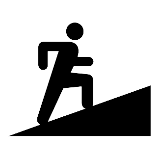

Prêt à camper
Camping sauvage
Observation de la faune
Localisation
Vous désirez une expérience de style tout inclus dans un environnement digne de l'Écosse? Plusieurs chalets traditionnels et une sélections d'habitations luxueuses vous permettront une immersion en nature qui saura vous faire oublier la ville rapidement.
Pour les aventuriers urbains parmis nous, nous offrons aussi des terrains de camping trois services qui vous permettront de ne faire qu'un avec la nature! Aux aventuriers traditionnels sont aussi offerts des terrains de camping sans service. Que ce soit pour une escapade romantique ou en famille, nous avons comme objectif de répondre à vos attentes.
Peu d'endroit au Québec peuvent s'enorgeuillir d'être habité par des phoques, des oiseaux de proie et des cerfs de Viriginie. Nous offrons plusieurs activités de découverte de la faune, accompagnés par nos gardes-parc. Renseignez-vous au bureau d'information!
Pour entendre ce parc
13 sentiers sont disponibles pour vous dégourdir les jambes. De niveau débutant à difficile, vous serez en mesure de vous évader pour quelques heures!
| Niveaux | Sentiers | ||
|  | Debutant |
|
|

|
Moyen |
|
|

|
Avancé |
|
|
Parce que je suis originaire de Rimouski, je vais au parc du Bic à chaque fois que je visite la ville. Nous aimons y passer du temps de qualité en famille.